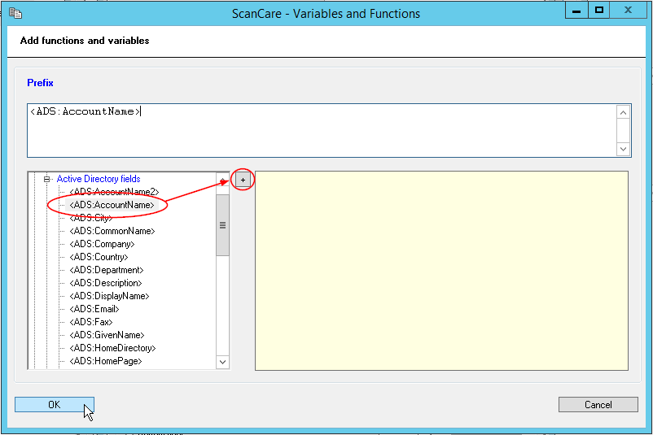
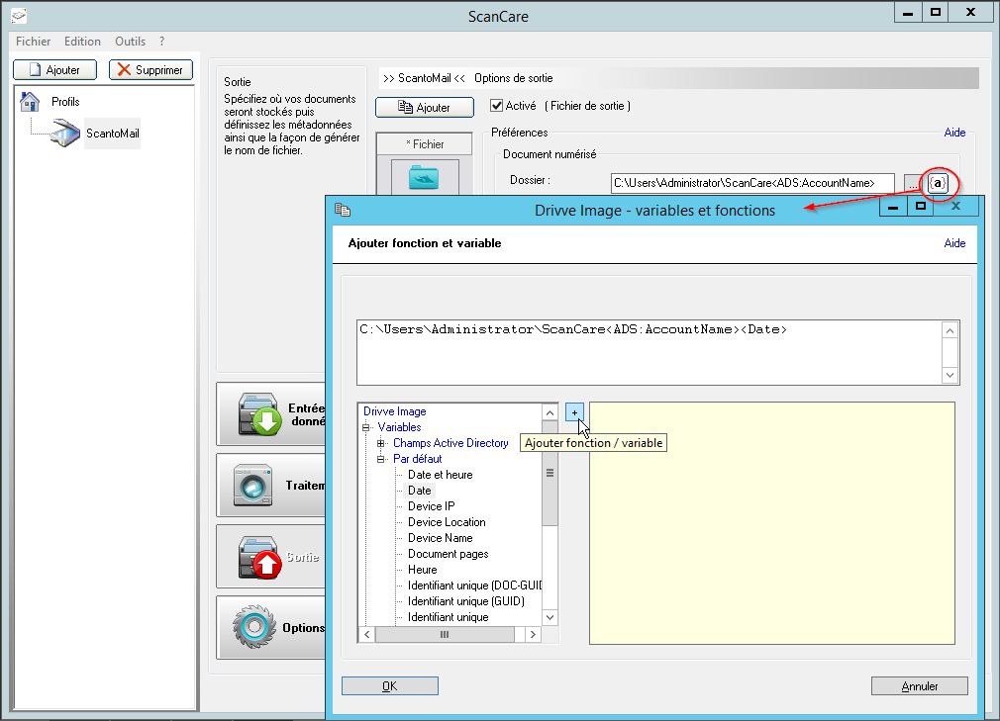
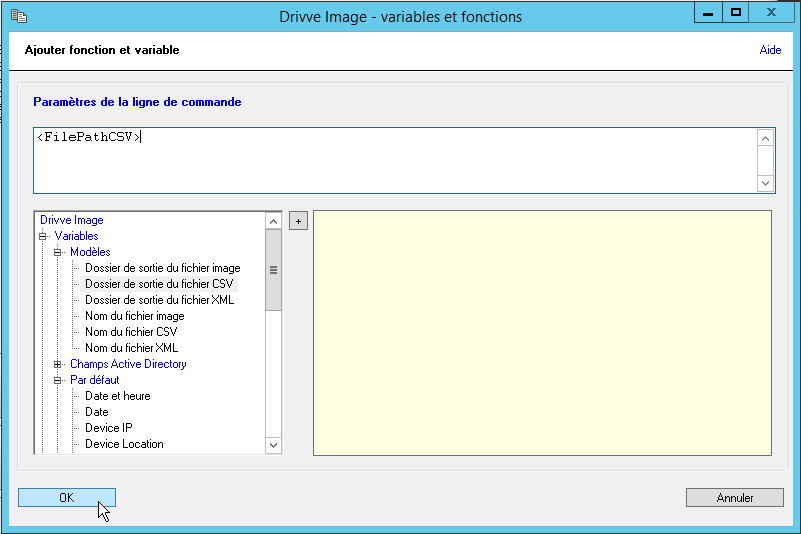

Watchdoc ScanCare - Configurer l'interface de sortie
Procédure
Pour configurer un fichier de sortie :
-
cochez la case Activé (fichier de sortie) ;
-
complétez les paramètres de la section Préférences :
Document numérisé :
-
Dans la section Document numérisé, dans le champ Dossier, saisissez le chemin du dossier dans lequel vous souhaitez enregistrer le document au terme de la numérisation par Watchdoc ScanCare. Vous pouvez également cliquer sur le bouton
 pour parcourir le réseau afin d'y sélectionner le dossier souhaité ;
pour parcourir le réseau afin d'y sélectionner le dossier souhaité ;
Créer le dossier s'il n'existe pas : cochez cette cas si vous souhaitez que WatchdocScanCare® crée un dossier spécifique pour chaque fichier numérisé.
Ajouter au fichier existant : cochez cette case si vous souhaitez que le document numérisé soit inclus dans le document précédemment numérisé. Vous pouvez régler les paramètres de cet ajout :
Taille maximale : indiquez, en Kilooctets, la taille maximale du fichier. Au-delà, la solution créera un nouveau fichier ;
Maximum de pages : indiquez le nombre de page maximal du fichier. Au-delà, la solution créer un nouveau fichier.
Ajouter au début/A la fin du fichier : indiquez si le document numérisé doit être ajouté dans l'ordre chronologique ou antechronologique de sa numérisation.
Un certain nombre de paramètres de Watchdoc ScanCare peuvent être configurés à l'aide de variables et fonctions qui permettent d'affiner la configuration en exploitant des données système et / ou prédéfinies.
Par exemple, des données relatives aux périphériques, aux données du répertoire utilisateurs ou aux tâches traitées.
L'outil dédié à leur configuration est accessible depuis le logo présent dans de nombreuses interfaces de Watchdoc ScanCare.
Pour utiliser les variables et fonction :
cliquez sur le bouton pour accéder à la liste des fonctions et variables ;
depuis la colonne de gauche, parcourez la liste des variables et fonctions disponibles ;
choisissez la variable ou la fonction que vous souhaitez ajouter. Les détails de la fonction sont affichés dans la fenêtre de droite ;
cliquez sur le bouton
pour ajouter la variable ou la fonction : cette dernière est affichée dans le champ supérieur :

Cliquez sur OK pour confirmer l'ajout des fonctions et variables.
→ Les variables et fonctions ajoutées au dossier contribuent à identifier le dossier et à qualifier son contenu afin de l'exploiter plus facilement.
-
Création du nom de fichier : cliquez pour préciser la manière dont Watchdoc ScanCare® crée le nom du fichier. Ce nom peut être créé à l'aide de variables ou de fonction affichées dans la fenêtre :
-
dans la colonne de gauche déployez la liste des variables et des fonctions disponibles ;
-
sélectionnez la variable ou la fonction que vous souhaitez ajouter ;
-
cliquez sur le bouton
pour ajouter la variable : cette dernière s'affiche dans la zone supérieure.
→ dans la zone supérieure s'affichent les fonctions et variables servant à composer le nom du fichier.
-
Créer un fichier texte OCR : cochez cette case si vous souhaitez que Watchdoc ScanCare® associe un fichier OCR au document numérisé.
-
cliquez sur le bouton pour accéder à la liste des langues disponibles ;
-
cliquez sur pour ouvrir la liste des langues disponibles ;
-
cochez la case correspondant à la langue du document ;
-
dans la zone Liste des Caractères, saisissez les caractères qui doivent être reconnus :
-
saisissez 123[...]1 :
-
ABC[...]Z :
-
abc[...]z :
-
dans la colonne de gauche déployez la liste des variables et des fonctions disponibles ;
-
-
Dossier sortie en cas d'erreur : cliquez sur le bouton
pour parcourir le réseau afin d'y sélectionner un dossier dans lequel doivent être enregistrer les documents dans le cas où une erreur survient durant le processus de numérisation.
-
Un certain nombre de paramètres de Watchdoc ScanCare peuvent être configurés à l'aide de variables et fonctions qui permettent d'affiner la configuration en exploitant des données système et / ou prédéfinies. Par exemple, des données relatives aux périphériques, aux données du répertoire utilisateurs ou aux tâches traitées. L'outil dédié à leur configuration est accessible depuis le logo présent dans de nombreuses interfaces de Watchdoc ScanCare.Pour utiliser les variables et fonction : cliquez sur le bouton pour accéder à la liste des fonctions et variables ; depuis la colonne de gauche, parcourez la liste des variables et fonctions disponibles ; choisissez la variable ou la fonction que vous souhaitez ajouter. Les détails de la fonction sont affichés dans la fenêtre de droite ;cliquez sur le bouton
pour ajouter la variable ou la fonction : cette dernière est affichée dans le champ supérieur :
Cliquez sur OK pour confirmer l'ajout des fonctions et variables.
Fichier de métadonnées :
Lors de la numérisation, Watchdoc ScanCare® peut extraire les métadonnées des documents et les enregistrer dans des fichiers CSV et/ou XML. Pour générer des fichiers de métadonnées,
-
cochez la case Créer un fichier CSV et/ou Créer un fichier XML, puis complétez les paramètres suivants :
-
dans le champ Dossier, saisissez le chemin du dossier dans lequel vous souhaitez enregistrer le document de métadonnées au terme de la numérisation. Vous pouvez également cliquer sur le bouton
pour parcourir le réseau afin d'y sélectionner le dossier souhaité ; -
Nom de fichier : cliquez sur le lien Création du nom de fichier pour générer le nom à l'aide d'une fonction et/ou d'une variable (cf. Watchdoc ScanCare - Utiliser les fonctions et les variables) ;
-
Utiliser le nom de fichier du document : cochez cette case pour attribuer au fichier de métadonnées le nom du fichier numérisé.
-
Cliquez sur le bouton Avancé pour affiner le paramétrage du fichier de métadonnées :
Ajouter au fichier existant : cochez cette case pour enregistrer l'intégralité des métadonnées des documents numérisés dans un seul fichier .CSV ;
Ajouter le texte de l'OCR au fichier : cochez cette case pour enregistrer le texte issu de l'analyse OCR aux métadonnées dans le fichier .CSV ;
Ajouter le texte de la zone OCR au fichier : cochez cette case pour enregistrer dans le fichier de métadonnées .CSV le texte issu de zones d'analyse OCR spécifiques ;
Séparateur de texte : sélectionnez dans la liste ou saisissez dans le champ le caractère permettant de séparer les textes dans le fichier CSV ;
Séparateur de champ : sélectionnez dans la liste ou saisissez dans le champ le caractère permettant de séparer les valeurs dans le fichier CSV ;
Séparateur d'enregistrement : sélectionnez dans la liste ou saisissez dans le champ le code ASCII d'un caractère permettant de séparer les valeurs dans le fichier CSV ;
Cliquez sur Fichier de transformation (XML) pour accéder à l'ensemble des fichiers de transformation (.xslt) permettant de mettre en forme les métadonnnées .XML extraites du document numérisé.
Extension du fichier : indiquez dans le champ l'extension attribuée au fichier (.csv ou .xml) ou gardez l'extension attribuée par défaut.
-
Cliquez sur le bouton Lancer une application si vous souhaitez que le fichier de sortie généré soit traité par une application spécifique, telle qu'un fichier d'exécution ou un script. Dans la section Exécuter l'application :
dans le champ Chemin de l'application, indiquez le chemin du dossier dans lequel est enregistrée l'application à lancer. Vous pouvez également cliquer sur le bouton
dans le champ Paramètres de la ligne de commande, saisissez manuellement les paramètres de lancement de l'application.
Vous pouvez aussi utiliser les modèles proposés dans les fonctions et variables en cliquant sur le bouton .

Lancez l'application pour chaque document séparément : cochez la case pour relancer l'application pour chaque document numérisé.